Adding Homebrew Choices to Quilvyn's SRD 5E Rule Set
The SRD 5E rule set allows you to add homebrew choices to most of its
selections: backgrounds, weapons, races, and so on. The entry dialog for each
type of choice includes fields for all the information particular to that
type. For most choices, the values to enter into the dialog can be determined
by comparing them to similar choices from the core rule books.
The input fields used to enter homebrew choices are similar to those used
by the Quilvyn editor—text fields, selection menus, checkboxes, etc.
One difference between the two is that you can enter multiple values into most
text boxes in the homebrew choices editor. For example, when entering a
homebrew deity, you will likely want to enter multiple values in the Domains
text box. To do this, separate the individual values by commas:
Death,Tempest,Trickery. If you ever need to enter a single value that contains
a comma into a text box, enclose the value in quotes: "May create and mend
magic weapons, armor, and shields".
Although the widest text boxes that Quilvyn uses show around 40 characters, you
can enter longer text values. Only 40 characters will show at once, but you can
use your arrow keys to move the cursor within the full text. Several examples
below show only the beginning portion of longer values entered into text boxes.
|
Armors

|
For homebrew armors, Quilvyn displays fields for entering the armor's weight
category, the boost to armor class gained by using the armor, the maximum
dexterity armor class bonus allowed when wearing the armor, the minimum
strength required to use the armor without loss of speed, and whether wearing
the armor inflicts disadvantage on Dexterity (Stealth) rolls.
The example shown gives the values for chain mail made from mithral. As
discussed in the Magic Items A-Z section of the SRD, making armor from mithral
removes any Dexterity (Stealth) disadvantage and strength requirement.
|
|
Backgrounds

|
For homebrew backgrounds, Quilvyn displays fields for entering the features and
equipment provided by the background. Any languages and proficiencies gained
from the background can be included in the list of background features.
The example shown gives the values for an Apprentice background, which provides
the character with a set of artisan's tools, common clothes, and 15 GP. Its
features are a choice of one language, proficiency in a choice of artisan's
tools, proficiency in the Insight and Perception skills, and a
background-specific feature called Quick Repair.
|
|
Background, Class, and Race Features
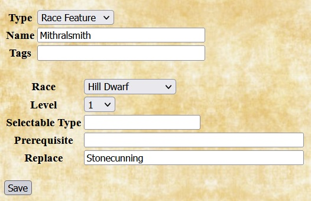
|
Quilvyn allows you to give backgrounds, classes, and races new features and to
replace predefined features with homebrew ones. For homebrew features, Quilvyn
displays entries for the name of the background, class, or race that gains the
feature and the level at which the feature is gained. If the feature is gained
only if selected by the user (e.g, a cleric domain), enter the type in the
Selectable Type box (e.g., "Divine Domain" for a cleric domain); otherwise,
leave the box empty, indicating that all characters of the given background,
class, or race gain the feature. Unlike most text boxes, the Selectable Type
field only accepts a single value. The Prerequisite box lists any requirements
that must be met to gain the feature, and Replace lists any predefined features
that this one replaces.
The first example shown replaces the Shelter Of The Faith feature of characters
with the Acolyte background with a homebrew feature named Ritual Assistant.
The second example adds another choice, Forge Domain, to the domains that
can be selected by clerics at level 1. It's a valid choice only for a cleric
whose deity has 'Forge' in their list of domains.
The third example replaces the predefined Stonecunning feature for hill dwarves
with a homebrew feature named Mithralsmith.
|
|
Classes
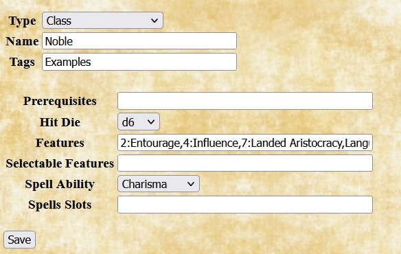
|
When adding a homebrew class, Quilvyn displays fields that allow you to specify
optional class prerequisites, the class hit dice, class features, and
information about class spellcasting. Features that are acquired after level 1
(for example, the rogue Cunning Action feature acquired at level 2) should be
preceded by the level and a colon (so, 2:Cunning Action). For classes that cast
spells, the spell ability and spell slots input fields provide places to enter
the basic ability used to calculate spell DCs and the progression of spell
slots available to the caster. Each item in the spell slot text box gives a
spell type and level followed by a colon, then by a series of
<count>@<level> terms, each of which indicates how many spell slots
the class receives at the given level. For example, the spell slot entry for
the cleric class would include C2: 2@3 3@4, indicating that clerics acquire 2
C2 slots at level 3 and a third at level 4.
The example shows a set of possible values for a Noble class, which provides
1d6 hit points at each level and proficiency in light armor, shields, martial
weapons, a choice of two languages, Charisma, Wisdom, Deception, and Insight.
Class features additionally include Entourage, Influence, and Landed
Aristocracy, which are acquired at levels 2, 4, and 7, respectively. The
effects of each of these features would be described by a
homebrew feature of the same name.
|
|
Deities
|
|
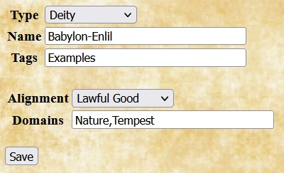
|
When adding a homebrew deity, Quilvyn displays fields to specify the deity's
alignment and domains. As discussed above, multiple domains entered in the
Domains text box should be separated by commas. Because the core rules describe
deities from multiple pantheons, Quilvyn adds the pantheon to the beginning of
the names of core rule deities for ease of grouping. You can follow this
convention when defining homebrew deities, but Quilvyn doesn't require it.
The example shown gives a possible set of values for the Babylonian deity Enlil.
|
|
Feats
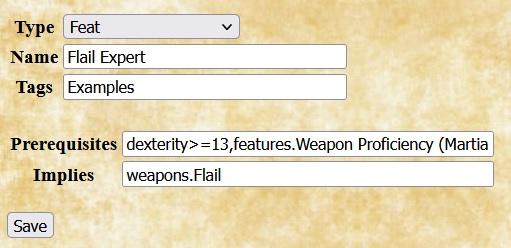
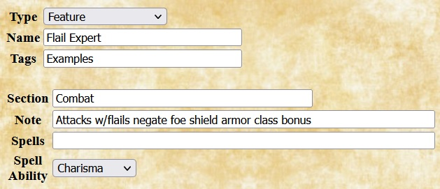
|
For a homebrew feat, Quilvyn displays fields to note any requirements that must
be met to select it. Quilvyn allows you to specify two kinds of requirements
for a feat. The Prerequisite box lists any requirements that must be met to
select the feat; Quilvyn generates a validation error if the feat is selected
for a character who does not meet these requirements. The Implies box lists any
requirements that, while not strictly required, make the feat useless if not
met. For example, although the rules don't require it, the PHB Crossbow Expert
feat is useless to a character who does not possess a crossbow. Quilvyn will
generate a validation warning if the Implies requirements are not met. When
specified, the Prerequisite and Implies fields will normally contain references
to character attributes; see the discussion of
using character attributes for how to include these. The
effects of a feat are entered separately as
homebrew feature of the same name.
The example shows the entry for a feat named Flail Expert. The Prerequisite box
notes that it requires a dexterity value of at least 13 and Weapon Proficiency
(Martial) to select the feat, and the Implies box notes that the feat is
useless unless the character possesses a flail. The example also shows the
corresponding feature that describes the effect of selecting the Flail Expert
feat.
|
|
Features
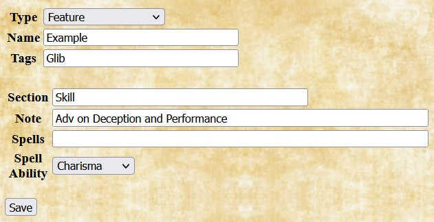
|
In Quilvyn, features describe the effects of feats and background, class,
and racial features. When adding a homebrew feature, enter the section of the
character sheet (one of Attributes, Combat, Feature, Magic, Save, or Skill)
where the note for the feature should appear, then enter the note text. You can
enter multiple sections and notes, but the number of sections entered must
equal the number of notes. Feature notes can both reference and modify
character attributes; see the discussion of
using character attributes for how to do this. For
features that give access to specific spells, such as the Tiefling's Infernal
Legacy or a cleric domain, Quilvyn provides entries for the list of spells and
the ability used for calculating spell DC. In the list of spells, you can note
that a feature provides access to a specific spell at a level higher than 1 by
adding the level and a colon before the spell name. For example, the Spells
entry for the Infernal Legacy feature would read
"Thaumaturgy,3:Hellish Rebuke,5:Darkness", which notes that a character with
this feature can cast Thaumaturgy at level 1, Hellish Rebuke at
level 3, and Darkness at level 5.
The example shows the entry for a feature named Glib with a note that appears
in the skill section of the character sheet. It gives the character Advantage
with the Deception and Performance skills.
|
|
Languages
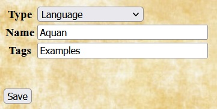
|
Adding a homebrew language requires only specifying the name. The example shows
the entry for a language named Aquan—perhaps the common tongue of
sentient marine races.
|
|
Races

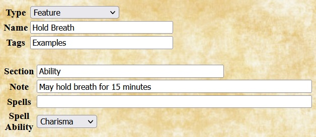
|
When adding a homebrew race, Quilvyn displays fields that allow you to enter
prerequisites and features for the race. Although none of the core races have
requirements, Quilvyn provides the Prerequisite entry to allow you to specify a
race that has, for example, a minimum strength requirement. Most races will
have fixed features, such as an ability adjustment. Quilvyn also allows
entering selectable features to support variations such as sub-races.
Each feature in these lists will require adding a homebrew
feature to describe its effects.
The example shows the entry for the Lizardfolk race from the Monster Manual.
Features for this race are: Natural Armor, Hold Breath, Multiattack, Language
(Draconic), and Bite. The corresponding feature entries for the first two of
these are shown.
|
|
Schools
|
Adding a homebrew school of magic only requires entering the name. Homebrew
schools will normally be paired with homebrew spells that fall within the
school.
The example shows the entry for a school named Control.
|
|
Skills
|
When adding a homebrew skill, Quilvyn displays fields for the skill's related
ability and the list of classes that are proficient in the skill.
The example shows the entry for a Sailing skill, which is related to
Intelligence. Fighters and rangers are proficient in the skill.
|
|
Spells
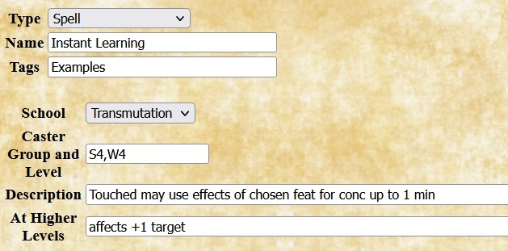
|
When adding a homebrew spell, Quilvyn displays fields that allow you to enter
the spell's school, the list of classes and levels for the spell, the
description, and any increased effects when the spell is cast at higher levels.
Spell descriptions can embed references to character attributes; see the
discussion of using character attributes for how to include
these. Unlike most text boxes, the Description and At Higher Levels fields only
accept a single value; if you enter multiple values, Quilvyn ignores all but
the last.
The example shows the entry for the transmutation spell Instant Learning,
which is a level 4 spell for sorcerers and wizards. When cast using a spell
slot of 5th level or higher, the spell affects one additional target for each
slot level above 4th.
|
|
Tools
|
Adding a homebrew tool requires only specifying its name and its type (one of
Artisan, Gaming, Musical, or General). The example shows the entry for a
whistle.
|
|
Weapons
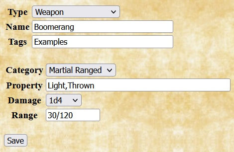
|
When adding a homebrew weapon, Quilvyn displays fields that allow you to enter
the weapon's category (Unarmed, Simple Melee or Ranged, or Martial Melee or
Ranged), properties, and (for ranged weapons) standard and long range values.
The example shows the entry for a boomerang, a martial ranged weapon with a
30'/120' range that inflicts 1d4 damage.
|
|
Using Character Attributes in Prerequisites and Notes
There are three places that you might want to use references to character
attributes when adding homebrew choices: prerequisites for homebrew classes,
feats, races, and class and race features; in feature notes that modify
character attributes; and embedded in feature notes and spell descriptions.
Attribute references appear somewhat differently in each of these contexts.
The examples below develop a homebrew feat named Alert Dodger. Like the monk
Unarmored Defense feature, this feat allows a character to add their (positive)
wisdom modifier to their armor class. The initial entry for the feat looks like
this:
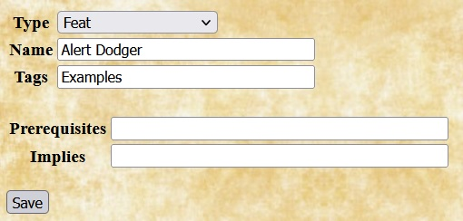
Using attributes in prerequisites
Some core feats include prerequisites—attribute values that the character
must have to take the feat or a level in the prestige class. Quilvyn allows you
to specify similar prerequisites when entering a homebrew class, feat, or race.
Since the effects of the Alert Dodger feat come from battle experience, it
makes sense to require a minimum proficiency bonus—say, 3—to take
the feat. This is represented by adding text to the feat's Prerequisite field:
Quilvyn will generate tests for this requirement and will show a validation
error if a character with a proficiency bonus of 2 or less is given this feat.
You can also specify that the character must have a specific feature as part of
your prerequisites. For the Alert Dodger feat, it seems reasonable to require
that the character also have the Evasion feature:
Finally, although a high wisdom might not be required to take this feat, it
will make little sense to do so unless the character's wisdom is at least 12,
giving a positive wisdom modifier. This can be specified by adding text to
the Implies field:

Within prerequisites, Quilvyn recognizes the common comparison operators
(<, <=, >, >=, ==, !=), and you can use the OR operator (||) to
require that at least one of a set of prerequisites is satisfied:
intelligence >= 15 || wisdom >= 15
When making a comparison to a text value rather than a number, surround the
value with single or double quotes. Quilvyn also supports the matching
operators =~ (matches) and !~ (does not match) with strings. The first of these
two prerequisites requires that the character have a Lawful Good alignment,
while the second allows any good alignment:
alignment == 'Lawful Good'
alignment =~ 'Good'
(You can think of the =~ and !~ operators as "contains" and "does not contain",
but they actually perform a pattern match, treating their second operand as a
regular expression. This means that certain characters, such as * and ?, have
special meanings if they appear in the second operand. The Mozilla project
provides a web page with
a detailed description of regular expressions.)
Using features to modify character attributes
With the Alert Dodger feat definition complete, the next step is to create the
corresponding feature, also named Alert Dodger. This will add the description
of the feat to the character sheet and allow Quilvyn to create rules to
implement its effects. Since the feat affects a character's armor class, its
note will fit best in the combat section of the character sheet.
To illustrate how Quilvyn processes feature notes, we'll initially define the
Alert Dodger feat to add a fixed +2 to the character's armor class, switching
later to adding the wisdom modifier instead.
Given this definition, Quilvyn will automatically generate a rule that adds two
to the character's armor class value, and the note will appear in italics on
the character sheet. For readability, character attributes in feature notes
must appear as shown above, with initial capital letters and spaces between
words.
Single features can modify multiple attributes; in these cases, the note should
list the individual modifications separated by slashes. For example, the note
for the Hill Dwarf Ability Adjustment reads:
+2 Constitution/+1 Wisdom
Notes in the save and skill sections can modify save bonuses and skill
modifiers by referencing the save type or skill name directly; the saves. and
skillModifiers. prefixes are not necessary:
+1 Constitution
+2 Perception/+2 Handle Animal
Embedding attributes in features notes and spell descriptions
Some feats, many class and race features, and some spells have effects that
vary based on character attributes. For example: the PHB Inspiring Leader feat
gives allies a number of temporary hit points based on the character's level
and charisma modifier; the Dwarven Toughness race feature increases the
character's hit points by 1 per level; the paladin's Lay On Hands feature
allows the character to heal hit points equal to five times their level; and
the damage inflicted by the Acid Splash spell increases at character
levels 5, 11, and 17.
You can embed references to character attributes in the text of feature notes
and spell descriptions by enclosing them within the characters %{}. Using this
ability, the note for the Dwarven Toughness feature looks like this:
+%{level} Hit Points
When Quilvyn displays this note on the character sheet, it first replaces the
reference to the character's level attribute with its value, so the note might
appear on the sheet as
+7 Hit Points
We can use this ability to replace the fixed +2 entered earlier for the effects
of the Alert Dodger feature with an amount equal to the character's wisdom
modifier, giving us its final definition:
Given this note, Quilvyn will automatically generate a rule to add the
character's wisdom modifier to their armor class and will display the note in
italics.
Beyond simple references, Quilvyn supports performing calculations within
embedded references. The notes for the barbarian's Intimidating Presence
feature and the fighter's Survivor feature look like this:
R30' May use an action to inflict frightened on target (DC %{charismaModifier+8+proficiencyBonus} Wisdom neg)
Regains %{constitutionModifier+5} HP each rd when between 1 and %{hitPoints//2} HP
As these notes show, individual notes and descriptions can contain multiple
embedded references, and individual references can use multiple attributes.
Within embedded references, Quilvyn supports the common comparison operators
(<, <=, >, >=, ==, !=), the common arithmetic operators
(+, -, *, /, unary -), AND (&&), OR (||), matching (=~, !~),
and integer division (//). It also supports the ternary if-then-else operator
(?:) and the operators <? and >?, which return the smaller and larger
of their two operands, respectively. Using these operators, we can define the
note for the paladin's Aura Of Protection feature as follows:
R%{levels.Paladin<18?10:30}' Self and allies +%{charismaModifier>?1} all saves
Within spell descriptions, in addition to common character
attributes, Quilvyn makes available the special character attributes lvl
and mdf. These variables refer to the caster level and ability modifier
appropriate to the specific spell: casterLevels.Cleric and wisdomModifier for
the C1 spell Bane, casterLevels.Wizard and intelligenceModifier for the
W0 spell Dancing Lights, casterLevels.Sorcerer and charismaModifier for
the S2 spell Alter Self, and so on. Using the lvl and mdf attributes
allows you to incorporate the caster level and ability modifier into a spell
description that works for multiple classes. For example, the description of
the Healing Word spell reads:
R60' Target regains 1d4+%{mdf} HP
When showing this description on the character sheet, Quilvyn will replace the
reference to mdf with the character's charisma modifier for the bard spell and
the character's wisdom modifier for the cleric and druid spells.
Common Character Attributes
The table below lists the character attributes that are most likely to be
useful in entering homebrew feats, features, classes, and races.
| Basic attributes |
Identity |
Combat |
Magic |
Skills and features |
- strength
- constitution
- dexterity
- intelligence
- wisdom
- charisma
- strengthModifier
- constitutionModifier
- dexterityModifier
- intelligenceModifier
- wisdomModifier
- charismaModifier
|
- alignment
- background
- deity
- deityAlignment
- deityDomains
- level
- levels.<class>, e.g.,
levels.Cleric
levels.Fighter
- race
|
- armorClass
- hitPoints
- initiative
- proficiencyBonus
- save.<ability>, e.g.,
save.Wisdom
- saveProficiency.<ability>, e.g.,
saveProficiency.Wisdom
- speed
- weapons.<name>, e.g.,
weapons.Longsword
weapons.Light Crossbow
- weaponProficiency.<name>, e.g.,
weaponProficiency.Longsword
weaponProficiency.Light Crossbow
|
- casterLevel
- casterLevels.<class>, e.g.,
casterLevels.Cleric
casterLevels.Wizard
- spellSlots.<type>, e.g.,
spellSlots.C0
spellSlots.W3
|
- features.<name>, e.g.
features.Evasion
features.Small
- languages.<name>, e.g.,
languages.Abyssal
languages.Halfling
- skills.<name>, e.g.,
skills.Intimidation
skills.Survival
- skillProficiency.<name>, e.g.,
skillProficiency.Intimidation
skillProficiency.Survival
- skillModifier.<name>, e.g.,
skillModifier.Intimidation
skillModifier.Survival
- tools.<name>, e.g.,
tools.Bagpipe
tools.Herbalism Kit
- toolProficiency.<name>, e.g.,
toolProficiency.Bagpipe
toolProficiency.Herbalism Kit
|